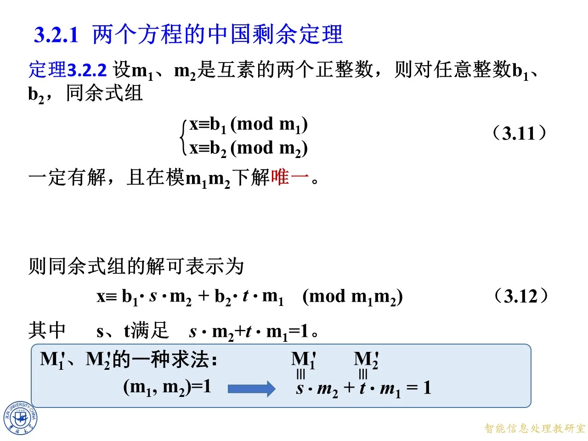
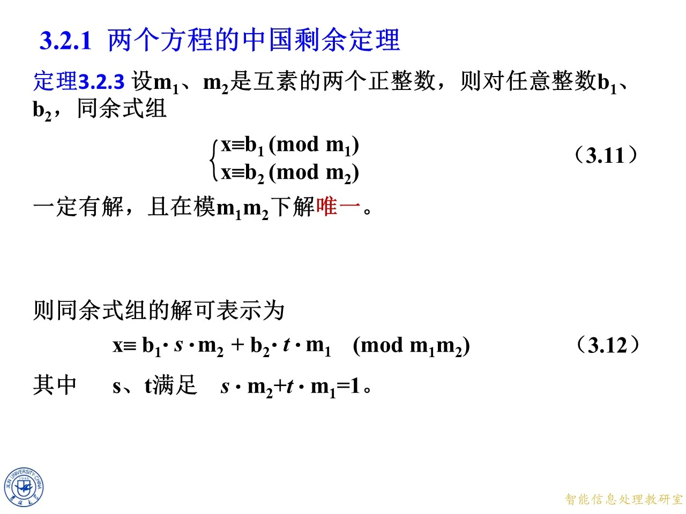
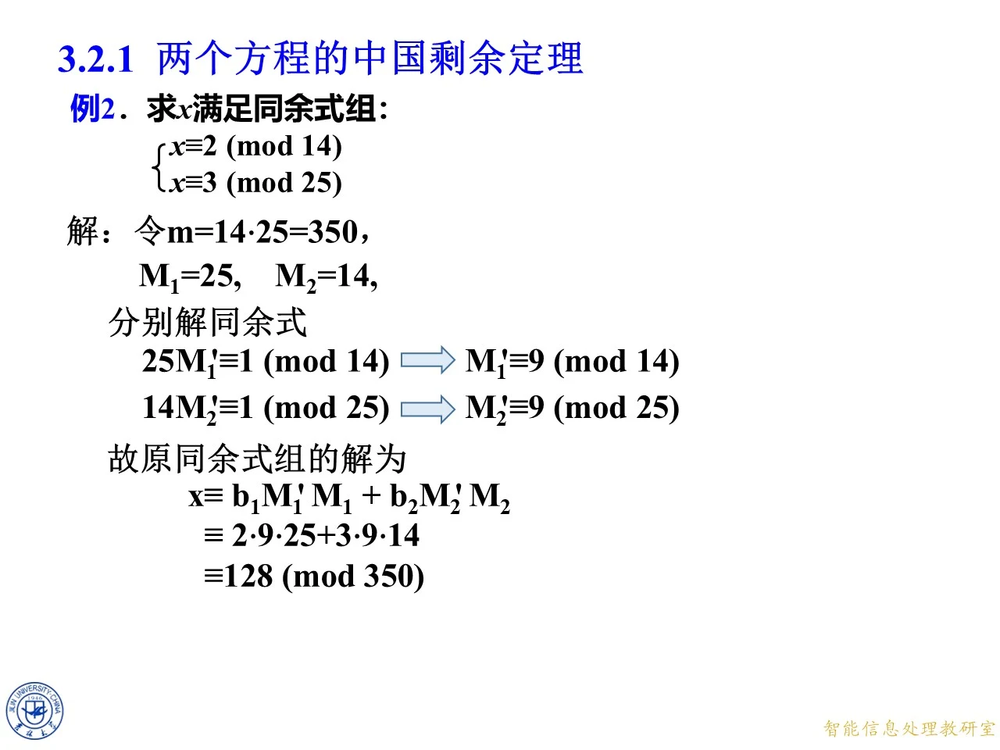

本篇讲解两个一次同余式联立时的中国剩余定理，是第三章同余式组理论的基础部分。它先借用完全剩余系的遍历观点寻找解，再把过程整理为模逆元公式与贝祖公式，最后通过两组例题说明怎样计算。掌握这里的构造后，学习一般形式、迭代求解以及剩余系遍历时，就能看清它们共用的思想。
回顾：完全剩余系遍历定理
◆ p.35-42 ｜从一个模推广到两个、三个模
本组首先给出单元线性式 a k + b ak+b ak + b gcd ( a , m ) = 1 \gcd(a,m)=1 g cd( a , m ) = 1 k k k m m m a k + b ak+b ak + b m m m a a a m m m k k k
接着考察两个互素正整数 m 1 , m 2 m_1,m_2 m 1 , m 2 m 2 k 1 + m 1 k 2 m_2k_1+m_1k_2 m 2 k 1 + m 1 k 2 m 1 m_1 m 1 m 2 k 1 m_2k_1 m 2 k 1 m 2 m_2 m 2 m 1 k 2 m_1k_2 m 1 k 2 m 2 m 3 k 1 + m 1 m 3 k 2 + m 1 m 2 k 3 .
m_2m_3k_1+m_1m_3k_2+m_1m_2k_3.
m 2 m 3 k 1 + m 1 m 3 k 2 + m 1 m 2 k 3 . i i i m i m_i m i
拓展 （课件外补充）：要精确表述“遍历”，可让 k i k_i k i m i m_i m i m = m 1 m 2 m=m_1m_2 m = m 1 m 2 ( k 1 , k 2 ) (k_1,k_2) ( k 1 , k 2 ) ( l 1 , l 2 ) (l_1,l_2) ( l 1 , l 2 ) m m m m 1 , m 2 m_1,m_2 m 1 , m 2 k 1 ≡ l 1 ( m o d m 1 ) k_1\equiv l_1\pmod{m_1} k 1 ≡ l 1 ( mod m 1 ) k 2 ≡ l 2 ( m o d m 2 ) k_2\equiv l_2\pmod{m_2} k 2 ≡ l 2 ( mod m 2 ) m m m m m m m m m
◆ p.43-44 ｜任意多个模的线性组合
课件把上述形式继续推广到 k k k m 1 , m 2 , … , m k m_1,m_2,\ldots,m_k m 1 , m 2 , … , m k m 2 ⋯ m k x 1 + m 1 m 3 ⋯ m k x 2 + ⋯ + m 1 ⋯ m k − 1 x k .
m_2\cdots m_kx_1+m_1m_3\cdots m_kx_2+\cdots+m_1\cdots m_{k-1}x_k.
m 2 ⋯ m k x 1 + m 1 m 3 ⋯ m k x 2 + ⋯ + m 1 ⋯ m k − 1 x k . x i x_i x i k i k_i k i i i i m i m_i m i m i m_i m i
◆ p.45-46 ｜引入总模与部分乘积
为简化长乘积，课件记
m = m 1 m 2 ⋯ m k , M i = m m i , i = 1 , … , k .
m=m_1m_2\cdots m_k,\qquad M_i=\frac{m}{m_i},\qquad i=1,\ldots,k.
m = m 1 m 2 ⋯ m k , M i = m i m , i = 1 , … , k . M i M_i M i m i m_i m i gcd ( M i , m i ) = 1 \gcd(M_i,m_i)=1 g cd( M i , m i ) = 1 M i M_i M i m i m_i m i M i M_i M i m i m_i m i M i M_i M i m i m_i m i
◆ p.47 ｜识别一般展开式
本页仍展示一般展开式，并用下划线标出首项与末项，提示它们分别对应 M 1 x 1 M_1x_1 M 1 x 1 M k x k M_kx_k M k x k i i i m i m_i m i x i x_i x i
◆ p.48-51 ｜逐项换成 M i M_i M i
课件把首项、第二项依次改写成 M 1 x 1 M_1x_1 M 1 x 1 M 2 x 2 M_2x_2 M 2 x 2 M i M_i M i
◆ p.52 ｜完全剩余系遍历式的紧凑写法
现在整个组合写成
M 1 x 1 + M 2 x 2 + ⋯ + M k x k .
M_1x_1+M_2x_2+\cdots+M_kx_k.
M 1 x 1 + M 2 x 2 + ⋯ + M k x k . m 1 , … , m k m_1,\ldots,m_k m 1 , … , m k x i x_i x i m i m_i m i m m m k = 2 k=2 k = 2 M 1 = m 2 M_1=m_2 M 1 = m 2 M 2 = m 1 M_2=m_1 M 2 = m 1 m 2 x 1 + m 1 x 2 m_2x_1+m_1x_2 m 2 x 1 + m 1 x 2
例 7 与热身题：用遍历式寻找指定余数
◆ p.53 ｜回顾 2.2 节例 7：模 4 余 2、模 5 余 1
题目要求最小的正整数 n n n n ≡ 2 ( m o d 4 ) n\equiv2\pmod4 n ≡ 2 ( mod 4 ) n ≡ 1 ( m o d 5 ) n\equiv1\pmod5 n ≡ 1 ( mod 5 ) m 1 = 4 , m 2 = 5 m_1=4,m_2=5 m 1 = 4 , m 2 = 5 n = m 2 k 1 + m 1 k 2 = 5 k 1 + 4 k 2 .
n=m_2k_1+m_1k_2=5k_1+4k_2.
n = m 2 k 1 + m 1 k 2 = 5 k 1 + 4 k 2 . 4 4 4 4 k 2 4k_2 4 k 2 5 ≡ 1 ( m o d 4 ) 5\equiv1\pmod4 5 ≡ 1 ( mod 4 ) 5 k 1 ≡ 2 ( m o d 4 ) 5k_1\equiv2\pmod4 5 k 1 ≡ 2 ( mod 4 ) k 1 ≡ 2 ( m o d 4 ) k_1\equiv2\pmod4 k 1 ≡ 2 ( mod 4 ) 5 5 5 5 k 1 5k_1 5 k 1 4 − 1 ≡ 4 ( m o d 5 ) 4^{-1}\equiv4\pmod5 4 − 1 ≡ 4 ( mod 5 ) 4 k 2 ≡ 1 ( m o d 5 ) ⟹ k 2 ≡ 4 ( m o d 5 ) .
4k_2\equiv1\pmod5\quad\Longrightarrow\quad k_2\equiv4\pmod5.
4 k 2 ≡ 1 ( mod 5 ) ⟹ k 2 ≡ 4 ( mod 5 ) . k 1 = 2 , k 2 = 4 k_1=2,k_2=4 k 1 = 2 , k 2 = 4 n = 5 × 2 + 4 × 4 = 26 ≡ 6 ( m o d 20 ) .
n=5\times2+4\times4=26\equiv6\pmod{20}.
n = 5 × 2 + 4 × 4 = 26 ≡ 6 ( mod 20 ) . n = 6 + 20 t n=6+20t n = 6 + 20 t t ∈ Z t\in\mathbb Z t ∈ Z 6 6 6 6 = 1 × 4 + 2 = 1 × 5 + 1 6=1\times4+2=1\times5+1 6 = 1 × 4 + 2 = 1 × 5 + 1
◆ p.53-54 ｜清单合用区间中的 p.54 原页：热身题，模 14 余 2、模 25 余 3
清单把 p.53 的例 7 与 p.54 的热身题合成一组；这里按两张原页拆开，上一页块讲例 7，本页块讲 p.54 的第二种数值情形。题目要求最小的正整数 n n n n ≡ 2 ( m o d 14 ) n\equiv2\pmod{14} n ≡ 2 ( mod 14 ) n ≡ 3 ( m o d 25 ) n\equiv3\pmod{25} n ≡ 3 ( mod 25 ) 14 , 25 14,25 14 , 25 n = 25 k 1 + 14 k 2 .
n=25k_1+14k_2.
n = 25 k 1 + 14 k 2 . 14 14 14 25 ≡ 11 ( m o d 14 ) 25\equiv11\pmod{14} 25 ≡ 11 ( mod 14 ) 11 − 1 ≡ 9 ( m o d 14 ) 11^{-1}\equiv9\pmod{14} 1 1 − 1 ≡ 9 ( mod 14 ) 25 k 1 ≡ 2 ( m o d 14 ) ⟹ k 1 ≡ 2 × 9 ≡ 4 ( m o d 14 ) .
25k_1\equiv2\pmod{14}
\quad\Longrightarrow\quad
k_1\equiv2\times9\equiv4\pmod{14}.
25 k 1 ≡ 2 ( mod 14 ) ⟹ k 1 ≡ 2 × 9 ≡ 4 ( mod 14 ) . 25 25 25 14 − 1 ≡ 9 ( m o d 25 ) 14^{-1}\equiv9\pmod{25} 1 4 − 1 ≡ 9 ( mod 25 ) 14 × 9 = 126 ≡ 1 ( m o d 25 ) 14\times9=126\equiv1\pmod{25} 14 × 9 = 126 ≡ 1 ( mod 25 ) 14 k 2 ≡ 3 ( m o d 25 ) ⟹ k 2 ≡ 3 × 9 ≡ 2 ( m o d 25 ) .
14k_2\equiv3\pmod{25}
\quad\Longrightarrow\quad
k_2\equiv3\times9\equiv2\pmod{25}.
14 k 2 ≡ 3 ( mod 25 ) ⟹ k 2 ≡ 3 × 9 ≡ 2 ( mod 25 ) . k 1 = 4 , k 2 = 2 k_1=4,k_2=2 k 1 = 4 , k 2 = 2 n = 25 × 4 + 14 × 2 = 128 ( m o d 350 ) .
n=25\times4+14\times2=128\pmod{350}.
n = 25 × 4 + 14 × 2 = 128 ( mod 350 ) . n = 128 + 350 t n=128+350t n = 128 + 350 t t ∈ Z t\in\mathbb Z t ∈ Z 128 128 128 128 = 9 × 14 + 2 = 5 × 25 + 3 128=9\times14+2=5\times25+3 128 = 9 × 14 + 2 = 5 × 25 + 3
拓展 （课件外补充）：课件在本页直接写出了两个逆元。它们也可用欧几里得算法补出：25 = 14 + 11 25=14+11 25 = 14 + 11 14 = 11 + 3 14=11+3 14 = 11 + 3 11 = 3 × 3 + 2 11=3\times3+2 11 = 3 × 3 + 2 3 = 2 + 1 3=2+1 3 = 2 + 1 9 × 14 − 5 × 25 = 1 9\times14-5\times25=1 9 × 14 − 5 × 25 = 1 14 14 14 − 5 × 25 ≡ 1 ( m o d 14 ) -5\times25\equiv1\pmod{14} − 5 × 25 ≡ 1 ( mod 14 ) 25 − 1 ≡ − 5 ≡ 9 ( m o d 14 ) 25^{-1}\equiv-5\equiv9\pmod{14} 2 5 − 1 ≡ − 5 ≡ 9 ( mod 14 ) 25 25 25 14 − 1 ≡ 9 ( m o d 25 ) 14^{-1}\equiv9\pmod{25} 1 4 − 1 ≡ 9 ( mod 25 )
定理 3.2.2 的构造：把两个条件拆成两个单方程
◆ p.55-57 ｜同余式组（3.11）与解的预设形式
设 m 1 , m 2 m_1,m_2 m 1 , m 2 b 1 , b 2 b_1,b_2 b 1 , b 2 { x ≡ b 1 ( m o d m 1 ) , x ≡ b 2 ( m o d m 2 ) .
\begin{cases}
x\equiv b_1\pmod{m_1},\\
x\equiv b_2\pmod{m_2}.
\end{cases}
{ x ≡ b 1 ( mod m 1 ) , x ≡ b 2 ( mod m 2 ) . x ≡ m 2 k 1 + m 1 k 2 ( m o d m 1 m 2 ) .
x\equiv m_2k_1+m_1k_2\pmod{m_1m_2}.
x ≡ m 2 k 1 + m 1 k 2 ( mod m 1 m 2 ) . m 2 m_2 m 2 m 1 m_1 m 1 k 1 , k 2 k_1,k_2 k 1 , k 2
◆ p.58-60 ｜代入两个同余条件
将预设形式代入（3.11），得到等价条件
{ m 2 k 1 + m 1 k 2 ≡ b 1 ( m o d m 1 ) , m 2 k 1 + m 1 k 2 ≡ b 2 ( m o d m 2 ) .
\begin{cases}
m_2k_1+m_1k_2\equiv b_1\pmod{m_1},\\
m_2k_1+m_1k_2\equiv b_2\pmod{m_2}.
\end{cases}
{ m 2 k 1 + m 1 k 2 ≡ b 1 ( mod m 1 ) , m 2 k 1 + m 1 k 2 ≡ b 2 ( mod m 2 ) . x x x m 1 m 2 m_1m_2 m 1 m 2
◆ p.61 ｜代入式与解式之间的双向关系
本页用双向箭头强调：参数条件与解的表达式要一起看。左方两条同余式负责约束 k 1 , k 2 k_1,k_2 k 1 , k 2 x ≡ k 1 m 2 + k 2 m 1 ( m o d m 1 m 2 ) x\equiv k_1m_2+k_2m_1\pmod{m_1m_2} x ≡ k 1 m 2 + k 2 m 1 ( mod m 1 m 2 ) x x x x x x
◆ p.62-64 ｜消去各自模下的零项
第一式模 m 1 m_1 m 1 m 1 k 2 ≡ 0 ( m o d m 1 ) m_1k_2\equiv0\pmod{m_1} m 1 k 2 ≡ 0 ( mod m 1 ) m 2 m_2 m 2 m 2 k 1 ≡ 0 ( m o d m 2 ) m_2k_1\equiv0\pmod{m_2} m 2 k 1 ≡ 0 ( mod m 2 ) { m 2 k 1 ≡ b 1 ( m o d m 1 ) , m 1 k 2 ≡ b 2 ( m o d m 2 ) .
\begin{cases}
m_2k_1\equiv b_1\pmod{m_1},\\
m_1k_2\equiv b_2\pmod{m_2}.
\end{cases}
{ m 2 k 1 ≡ b 1 ( mod m 1 ) , m 1 k 2 ≡ b 2 ( mod m 2 ) . k 1 k_1 k 1 k 2 k_2 k 2
◆ p.65 ｜两个参数方程独立求解
本页突出第二条参数方程与最终组合式之间的上下对应关系。第一条方程在模 m 1 m_1 m 1 k 1 k_1 k 1 m 2 m_2 m 2 k 2 k_2 k 2 m 2 m_2 m 2 k 1 k_1 k 1 m 1 m_1 m 1 k 2 k_2 k 2
◆ p.66-68 ｜用模逆元确定 k 1 , k 2 k_1,k_2 k 1 , k 2
由 gcd ( m 1 , m 2 ) = 1 \gcd(m_1,m_2)=1 g cd( m 1 , m 2 ) = 1 m 2 m_2 m 2 m 1 m_1 m 1 m 1 m_1 m 1 m 2 m_2 m 2 { k 1 ≡ b 1 m 2 − 1 ( m o d m 1 ) , k 2 ≡ b 2 m 1 − 1 ( m o d m 2 ) .
\begin{cases}
k_1\equiv b_1m_2^{-1}\pmod{m_1},\\
k_2\equiv b_2m_1^{-1}\pmod{m_2}.
\end{cases}
{ k 1 ≡ b 1 m 2 − 1 ( mod m 1 ) , k 2 ≡ b 2 m 1 − 1 ( mod m 2 ) . m 2 − 1 m_2^{-1} m 2 − 1 m 1 m_1 m 1 m 1 − 1 m_1^{-1} m 1 − 1 m 2 m_2 m 2
◆ p.69 ｜把参数代回线性组合
课件标出最终式中的 k 1 , k 2 k_1,k_2 k 1 , k 2 x x x m 1 m 2 m_1m_2 m 1 m 2 m 1 m 2 m_1m_2 m 1 m 2
◆ p.70 ｜得到逆元形式的解
代回后，解写为
x ≡ b 1 m 2 − 1 m 2 + b 2 m 1 − 1 m 1 ( m o d m 1 m 2 ) .
x\equiv b_1m_2^{-1}m_2+b_2m_1^{-1}m_1\pmod{m_1m_2}.
x ≡ b 1 m 2 − 1 m 2 + b 2 m 1 − 1 m 1 ( mod m 1 m 2 ) . m 1 m_1 m 1 b 1 m 2 − 1 m 2 ≡ b 1 ( m o d m 1 ) b_1m_2^{-1}m_2\equiv b_1\pmod{m_1} b 1 m 2 − 1 m 2 ≡ b 1 ( mod m 1 ) m 2 m_2 m 2 b 2 m 1 − 1 m 1 ≡ b 2 ( m o d m 2 ) b_2m_1^{-1}m_1\equiv b_2\pmod{m_2} b 2 m 1 − 1 m 1 ≡ b 2 ( mod m 2 )
◆ p.71 ｜先记总模 m m m
为统一记号，令 m = m 1 m 2 m=m_1m_2 m = m 1 m 2 m m m m m m m 1 m 2 m_1m_2 m 1 m 2
◆ p.72-74 ｜定义两个部分乘积
在两个方程情形中定义
M i = m m i , i = 1 , 2 ,
M_i=\frac{m}{m_i},\qquad i=1,2,
M i = m i m , i = 1 , 2 , M 1 = m 2 , M 2 = m 1 M_1=m_2,M_2=m_1 M 1 = m 2 , M 2 = m 1 M 1 , M 2 M_1,M_2 M 1 , M 2 m 2 − 1 , m 1 − 1 m_2^{-1},m_1^{-1} m 2 − 1 , m 1 − 1
◆ p.75-76 ｜把系数与逆元按同一下标配对
由于 M 1 = m 2 M_1=m_2 M 1 = m 2 M 2 = m 1 M_2=m_1 M 2 = m 1 m 1 m_1 m 1 m 2 − 1 = M 1 − 1 m_2^{-1}=M_1^{-1} m 2 − 1 = M 1 − 1 m 2 m_2 m 2 m 1 − 1 = M 2 − 1 m_1^{-1}=M_2^{-1} m 1 − 1 = M 2 − 1 x ≡ b 1 M 1 − 1 M 1 + b 2 M 2 − 1 M 2 ( m o d m ) .
x\equiv b_1M_1^{-1}M_1+b_2M_2^{-1}M_2\pmod m.
x ≡ b 1 M 1 − 1 M 1 + b 2 M 2 − 1 M 2 ( mod m ) . M i M_i M i m i m_i m i
◆ p.77 ｜标出需要求出的两个逆元
本页突出 M 1 − 1 M_1^{-1} M 1 − 1 M 2 − 1 M_2^{-1} M 2 − 1 M 1 , M 2 M_1,M_2 M 1 , M 2 b 1 , b 2 b_1,b_2 b 1 , b 2 M i M i ′ ≡ 1 ( m o d m i ) M_iM_i'\equiv1\pmod{m_i} M i M i ′ ≡ 1 ( mod m i )
◆ p.78-79 ｜用 M i ′ M_i' M i ′
课件引入 M i ′ M_i' M i ′ M i ′ M i ≡ 1 ( m o d m i ) , i = 1 , 2.
M_i'M_i\equiv1\pmod{m_i},\qquad i=1,2.
M i ′ M i ≡ 1 ( mod m i ) , i = 1 , 2. b 1 M 1 ′ M 1 + b 2 M 2 ′ M 2 b_1M_1'M_1+b_2M_2'M_2 b 1 M 1 ′ M 1 + b 2 M 2 ′ M 2
◆ p.80 ｜突出 M 1 ′ , M 2 ′ M_1',M_2' M 1 ′ , M 2 ′
本页标出解式中的 M 1 ′ M_1' M 1 ′ M 2 ′ M_2' M 2 ′ M 1 M_1 M 1 M 2 M_2 M 2 M i ′ M i ≡ 1 ( m o d m i ) M_i'M_i\equiv1\pmod{m_i} M i ′ M i ≡ 1 ( mod m i ) M i ′ M i M_i'M_i M i ′ M i 1 1 1 0 0 0
◆ p.81 ｜标准的构造公式
至此解写成
x ≡ b 1 M 1 ′ M 1 + b 2 M 2 ′ M 2 ( m o d m ) .
x\equiv b_1M_1'M_1+b_2M_2'M_2\pmod m.
x ≡ b 1 M 1 ′ M 1 + b 2 M 2 ′ M 2 ( mod m ) . m = m 1 m 2 m=m_1m_2 m = m 1 m 2 M i = m / m i M_i=m/m_i M i = m / m i M i ′ M i ≡ 1 ( m o d m i ) M_i'M_i\equiv1\pmod{m_i} M i ′ M i ≡ 1 ( mod m i ) b i b_i b i
定理 3.2.2：存在性、唯一性与标准公式
◆ p.82-100 ｜定理 3.2.2 的完整构造与证明区间
本页块覆盖定理 3.2.2 从动画开始到贝祖系数代入的全过程。下面按清单的图像分组逐页展开；p.87 起出现完整的定理陈述，p.88-100 接着说明逆元求法并代入公式，存在性与唯一性也分别说明。
◆ p.82-89 ｜定理 3.2.2 的完整陈述
定理 3.2.2：设 m 1 , m 2 m_1,m_2 m 1 , m 2 b 1 , b 2 b_1,b_2 b 1 , b 2 m 1 m 2 m_1m_2 m 1 m 2 m = m 1 m 2 m=m_1m_2 m = m 1 m 2 M i = m / m i M_i=m/m_i M i = m / m i x ≡ b 1 M 1 ′ M 1 + b 2 M 2 ′ M 2 ( m o d m ) , M i ′ M i ≡ 1 ( m o d m i ) , i = 1 , 2.
x\equiv b_1M_1'M_1+b_2M_2'M_2\pmod m,
\qquad M_i'M_i\equiv1\pmod{m_i},\ i=1,2.
x ≡ b 1 M 1 ′ M 1 + b 2 M 2 ′ M 2 ( mod m ) , M i ′ M i ≡ 1 ( mod m i ) , i = 1 , 2. gcd ( m 1 , m 2 ) = 1 \gcd(m_1,m_2)=1 g cd( m 1 , m 2 ) = 1
拓展 （课件外补充）：补全唯一性证明。设 x , y x,y x , y x − y ≡ 0 ( m o d m 1 ) x-y\equiv0\pmod{m_1} x − y ≡ 0 ( mod m 1 ) x − y ≡ 0 ( m o d m 2 ) x-y\equiv0\pmod{m_2} x − y ≡ 0 ( mod m 2 ) m 1 ∣ ( x − y ) m_1\mid(x-y) m 1 ∣ ( x − y ) m 2 ∣ ( x − y ) m_2\mid(x-y) m 2 ∣ ( x − y ) gcd ( m 1 , m 2 ) = 1 \gcd(m_1,m_2)=1 g cd( m 1 , m 2 ) = 1 m 1 m 2 ∣ ( x − y ) m_1m_2\mid(x-y) m 1 m 2 ∣ ( x − y ) x ≡ y ( m o d m 1 m 2 ) x\equiv y\pmod{m_1m_2} x ≡ y ( mod m 1 m 2 ) m 1 m 2 m_1m_2 m 1 m 2
◆ p.90-94 ｜用贝祖等式同时找到两个逆元
由 gcd ( m 1 , m 2 ) = 1 \gcd(m_1,m_2)=1 g cd( m 1 , m 2 ) = 1 s , t s,t s , t s m 2 + t m 1 = 1.
sm_2+tm_1=1.
s m 2 + t m 1 = 1. m 1 m_1 m 1 t m 1 tm_1 t m 1 s m 2 ≡ 1 ( m o d m 1 ) sm_2\equiv1\pmod{m_1} s m 2 ≡ 1 ( mod m 1 ) M 1 ′ = s M_1'=s M 1 ′ = s m 2 m_2 m 2 s m 2 sm_2 s m 2 t m 1 ≡ 1 ( m o d m 2 ) tm_1\equiv1\pmod{m_2} t m 1 ≡ 1 ( mod m 2 ) M 2 ′ = t M_2'=t M 2 ′ = t
◆ p.95 ｜定理陈述与逆元求法合并复习
本页隐去中间的 m , M i m,M_i m , M i s m 2 + t m 1 = 1 sm_2+tm_1=1 s m 2 + t m 1 = 1 s , t s,t s , t M 1 = m 2 , M 2 = m 1 M_1=m_2,M_2=m_1 M 1 = m 2 , M 2 = m 1
◆ p.96 ｜标出两个部分乘积 M 1 , M 2 M_1,M_2 M 1 , M 2
课件在公式中框出 M 1 , M 2 M_1,M_2 M 1 , M 2 M i ′ M i M_i'M_i M i ′ M i M i M_i M i M i ′ M_i' M i ′
◆ p.97 ｜将 M 1 , M 2 M_1,M_2 M 1 , M 2 m 2 , m 1 m_2,m_1 m 2 , m 1
本页把两个部分乘积展开，得到
x ≡ b 1 M 1 ′ m 2 + b 2 M 2 ′ m 1 ( m o d m 1 m 2 ) .
x\equiv b_1M_1'm_2+b_2M_2'm_1\pmod{m_1m_2}.
x ≡ b 1 M 1 ′ m 2 + b 2 M 2 ′ m 1 ( mod m 1 m 2 ) . m 2 k 1 + m 1 k 2 m_2k_1+m_1k_2 m 2 k 1 + m 1 k 2 M i M_i M i
◆ p.98 ｜标出逆元系数的位置
本页框出 M 1 ′ , M 2 ′ M_1',M_2' M 1 ′ , M 2 ′ M 1 , M 2 M_1,M_2 M 1 , M 2 M i M_i M i M i ′ M_i' M i ′ b i b_i b i b 1 b_1 b 1 m 1 m_1 m 1
◆ p.99-100 ｜代入贝祖系数 s , t s,t s , t
取 M 1 ′ = s , M 2 ′ = t M_1'=s,M_2'=t M 1 ′ = s , M 2 ′ = t x ≡ b 1 s m 2 + b 2 t m 1 ( m o d m 1 m 2 ) ,
x\equiv b_1sm_2+b_2tm_1\pmod{m_1m_2},
x ≡ b 1 s m 2 + b 2 t m 1 ( mod m 1 m 2 ) , s , t s,t s , t s m 2 + t m 1 = 1 sm_2+tm_1=1 s m 2 + t m 1 = 1 m 1 m_1 m 1 s m 2 = 1 − t m 1 ≡ 1 ( m o d m 1 ) sm_2=1-tm_1\equiv1\pmod{m_1} s m 2 = 1 − t m 1 ≡ 1 ( mod m 1 ) b 1 b_1 b 1 m 2 m_2 m 2 b 2 b_2 b 2

课件原图 · 9月23日授课 · 第 539 页 查看前后已收录原页 → 定理 3.2.3：贝祖系数形式的中国剩余定理
◆ p.101 ｜定理 3.2.3 的等价表述
定理 3.2.3 保留与定理 3.2.2 相同的假设和“模 m 1 m 2 m_1m_2 m 1 m 2 x ≡ b 1 s m 2 + b 2 t m 1 ( m o d m 1 m 2 ) , s m 2 + t m 1 = 1.
x\equiv b_1sm_2+b_2tm_1\pmod{m_1m_2},
\qquad sm_2+tm_1=1.
x ≡ b 1 s m 2 + b 2 t m 1 ( mod m 1 m 2 ) , s m 2 + t m 1 = 1. s = M 1 ′ s=M_1' s = M 1 ′ t = M 2 ′ t=M_2' t = M 2 ′ M i , M i ′ M_i,M_i' M i , M i ′

课件原图 · 9月23日授课 · 第 540 页 查看前后已收录原页 → 例 2：标准构造公式的两组计算
◆ p.102-105 ｜例 2 的完整覆盖标记
本页块对应审计条目的例 2 全区间。课件把两组不同数值都编号为例 2：p.102-103 用模 4 与模 5 演示，p.104-105 改用模 14 与模 25；两题均完整写出逆元求解、公式代入与检验。
◆ p.102-103 ｜例 2 第一组：模 4 余 2、模 5 余 1
题目求 x x x { x ≡ 2 ( m o d 4 ) , x ≡ 1 ( m o d 5 ) .
\begin{cases}
x\equiv2\pmod4,\\
x\equiv1\pmod5.
\end{cases}
{ x ≡ 2 ( mod 4 ) , x ≡ 1 ( mod 5 ) . m 1 = 4 , m 2 = 5 , b 1 = 2 , b 2 = 1 m_1=4,m_2=5,b_1=2,b_2=1 m 1 = 4 , m 2 = 5 , b 1 = 2 , b 2 = 1 m = 4 × 5 = 20 m=4\times5=20 m = 4 × 5 = 20 M 1 = 5 , M 2 = 4 M_1=5,M_2=4 M 1 = 5 , M 2 = 4
第一步求逆元。由 5 M 1 ′ ≡ 1 ( m o d 4 ) 5M_1'\equiv1\pmod4 5 M 1 ′ ≡ 1 ( mod 4 ) M 1 ′ ≡ 1 ( m o d 4 ) M_1'\equiv1\pmod4 M 1 ′ ≡ 1 ( mod 4 ) M 1 ′ = 1 M_1'=1 M 1 ′ = 1 4 M 2 ′ ≡ 1 ( m o d 5 ) 4M_2'\equiv1\pmod5 4 M 2 ′ ≡ 1 ( mod 5 ) 4 × 4 = 16 ≡ 1 ( m o d 5 ) 4\times4=16\equiv1\pmod5 4 × 4 = 16 ≡ 1 ( mod 5 ) M 2 ′ = 4 M_2'=4 M 2 ′ = 4
第二步代入（3.12）：
x ≡ b 1 M 1 ′ M 1 + b 2 M 2 ′ M 2 = 2 × 1 × 5 + 1 × 4 × 4 = 26 ≡ 6 ( m o d 20 ) .
x\equiv b_1M_1'M_1+b_2M_2'M_2
=2\times1\times5+1\times4\times4
=26\equiv6\pmod{20}.
x ≡ b 1 M 1 ′ M 1 + b 2 M 2 ′ M 2 = 2 × 1 × 5 + 1 × 4 × 4 = 26 ≡ 6 ( mod 20 ) . x = 6 + 20 k x=6+20k x = 6 + 20 k k ∈ Z k\in\mathbb Z k ∈ Z 6 ≡ 2 ( m o d 4 ) 6\equiv2\pmod4 6 ≡ 2 ( mod 4 ) 6 ≡ 1 ( m o d 5 ) 6\equiv1\pmod5 6 ≡ 1 ( mod 5 )
◆ p.104-105 ｜例 2 第二组：模 14 余 2、模 25 余 3
题目求 x x x { x ≡ 2 ( m o d 14 ) , x ≡ 3 ( m o d 25 ) .
\begin{cases}
x\equiv2\pmod{14},\\
x\equiv3\pmod{25}.
\end{cases}
{ x ≡ 2 ( mod 14 ) , x ≡ 3 ( mod 25 ) . m 1 = 14 , m 2 = 25 , b 1 = 2 , b 2 = 3 m_1=14,m_2=25,b_1=2,b_2=3 m 1 = 14 , m 2 = 25 , b 1 = 2 , b 2 = 3 m = 14 × 25 = 350 m=14\times25=350 m = 14 × 25 = 350 M 1 = 25 , M 2 = 14 M_1=25,M_2=14 M 1 = 25 , M 2 = 14
先求 M 1 ′ M_1' M 1 ′ 25 ≡ 11 ( m o d 14 ) 25\equiv11\pmod{14} 25 ≡ 11 ( mod 14 ) 25 × 9 = 225 = 16 × 14 + 1 25\times9=225=16\times14+1 25 × 9 = 225 = 16 × 14 + 1 25 M 1 ′ ≡ 1 ( m o d 14 ) ⟹ M 1 ′ ≡ 9 ( m o d 14 ) .
25M_1'\equiv1\pmod{14}
\quad\Longrightarrow\quad M_1'\equiv9\pmod{14}.
25 M 1 ′ ≡ 1 ( mod 14 ) ⟹ M 1 ′ ≡ 9 ( mod 14 ) . M 2 ′ M_2' M 2 ′ 14 × 9 = 126 = 5 × 25 + 1 14\times9=126=5\times25+1 14 × 9 = 126 = 5 × 25 + 1 14 M 2 ′ ≡ 1 ( m o d 25 ) ⟹ M 2 ′ ≡ 9 ( m o d 25 ) .
14M_2'\equiv1\pmod{25}
\quad\Longrightarrow\quad M_2'\equiv9\pmod{25}.
14 M 2 ′ ≡ 1 ( mod 25 ) ⟹ M 2 ′ ≡ 9 ( mod 25 ) . x ≡ 2 × 9 × 25 + 3 × 9 × 14 = 450 + 378 = 828 ≡ 128 ( m o d 350 ) .
x\equiv2\times9\times25+3\times9\times14
=450+378=828
\equiv128\pmod{350}.
x ≡ 2 × 9 × 25 + 3 × 9 × 14 = 450 + 378 = 828 ≡ 128 ( mod 350 ) . x = 128 + 350 k x=128+350k x = 128 + 350 k k ∈ Z k\in\mathbb Z k ∈ Z 128 = 9 × 14 + 2 = 5 × 25 + 3 128=9\times14+2=5\times25+3 128 = 9 × 14 + 2 = 5 × 25 + 3 9 9 9 14 14 14 25 25 25

课件原图 · 9月23日授课 · 第 544 页 查看前后已收录原页 →